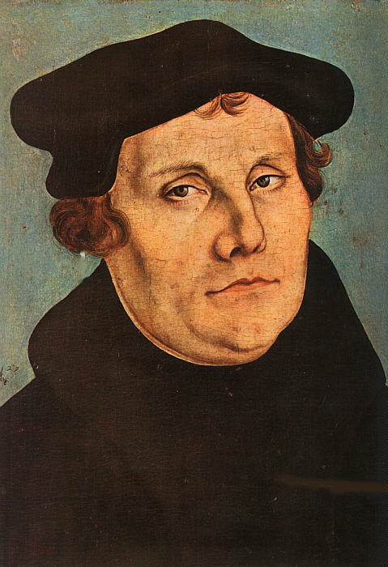
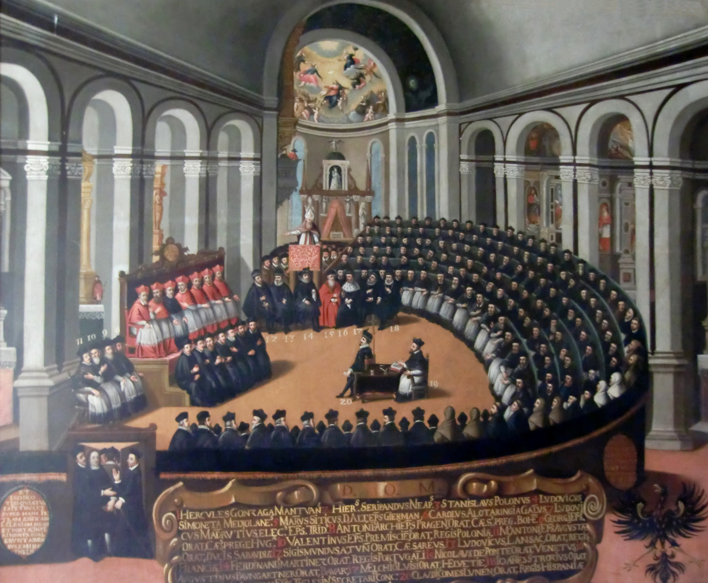
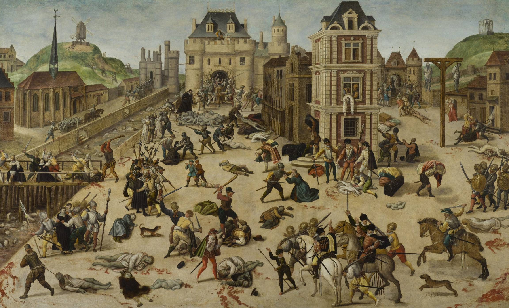

1. Οι Πρόδρομοι της Καταιγίδας: Η Αβινιόν & οι Πρώτες Σπίθες
Στο ενδέκατο μάθημα της σειράς, η Μαρία Ευθυμίου εξετάζει τον μεγαλύτερο σεισμό στη δυτική ιστορία μετά την πτώση της Ρώμης: την Προτεσταντική Μεταρρύθμιση. Πριν από την εμφάνιση του Λούθηρου, η Δυτική Εκκλησία είχε υποστεί δύο αιώνες βαθιάς απαξίωσης:
- Η Βαβυλώνια Αιχμαλωσία στην Αβινιόν (1309–1377): Υπό τη γαλλική πίεση, η παπική έδρα μεταφέρθηκε στη Νότια Γαλλία. Επτά διαδοχικοί Γάλλοι Πάπες υποτάχθηκαν στη γαλλική μοναρχία, μετατρέποντας τη Ρώμη σε σκιά και την Εκκλησία σε φορομπηχτικό μηχανισμό.
- Το Δυτικό Σχίσμα (1378–1417): Για σαράντα χρόνια υπήρχαν δύο (και αργότερα τρεις!) ταυτόχρονοι Πάπες σε Ρώμη, Αβινιόν και Πίζα, που αλληλοαφορίζονταν δημόσια, σκανδαλίζοντας τους πιστούς.
- Ο Γιαν Χους στην πυρά (1415): Στην Πράγα, ο Τσέχος ιεροκήρυκας Γιαν Χους κατήγγειλε τη σιμωνία. Στη Σύνοδο της Κωνσταντίας, παρότι είχε αυτοκρατορικό έγγραφο ασυλίας, συνελήφθη και **κάηκε ζωντανός στην πυρά**, ανάβοντας τη φωτιά των Χουσιτικών Πολέμων.
- Ο Έρασμος και το «Μωρίας Εγκώμιον» (1511):** Ο μεγάλος χριστιανός ανθρωπιστής Έρασμος ξεμπρόστιασε την αμάθεια των μοναχών. Όπως έλεγαν τότε: «Ο Έρασμος γέννησε το αυγό και ο Λούθηρος το εκκόλαψε!».
2. Ο Αναγεννησιακός Παπισμός & το Σκάνδαλο των Συγχωροχαρτίων
Στις αρχές του 16ου αιώνα, η Ρώμη έλαμπε χάρη στην τέχνη της Αναγέννησης, αλλά βούλιαζε στην ηθική σήψη. Οι Πάπες Αλέξανδρος ΣΤ΄ Βοργίας, Ιούλιος Β΄ (ο «στρατηγός Πάπας») και Λέων Ι΄ των Μεδίκων χρηματοδοτούσαν τον Μιχαήλ Άγγελο και τον Ραφαήλ, ανοικοδομώντας τη φαραωνική νέα Βασιλική του Αγίου Πέτρου.
Για να καλυφθούν τα αμύθητα κόστη, η Ρώμη οργάνωσε μια γιγάντια εμποροπανήγυρη πίστης: τα **Συγχωροχάρτια (*Indulgentiae*)**. Η Εκκλησία ισχυριζόταν ότι κατείχε το «Θησαυροφυλάκιο των Αξιομισθιών» (*Thesaurus Meritorum*) του Χριστού και μπορούσε να πουλά πιστοποιητικά μείωσης των βασάνων στο Καθαρτήριο Πυρ (*Purgatorium*). Στη Γερμανία, ο δομινικανός μοναχός Γιόχαν Τέτσελ (Johann Tetzel) περιόδευε με το διαβόητο σύνθημα:
«Μόλις το νόμισμα στο κουτί ηχήσει, η ψυχή από το Καθαρτήριο θα ξεπηδήσει!»
3. Ο Μαρτίνος Λούθηρος και οι 95 Θέσεις της Βιτεμβέργης (1517)
Η σπίθα που τίναξε το μεσαιωνικό οικοδόμημα στον αέρα προήλθε από έναν άσημο αυγουστινιανό μοναχό και καθηγητή Θεολογίας στο Πανεπιστήμιο της Βιτεμβέργης: τον Μαρτίνο Λούθηρο (Martin Luther, 1483–1546). Βασανισμένος από βαθιά υπαρξιακή αγωνία για την κρίση του Θεού, ο Λούθηρος ανακάλυψε στα λόγια του Αποστόλου Παύλου τη λυτρωτική αρχή: «Ο δίκαιος εκ πίστεως ζήσεται».

Στις 31 Οκτωβρίου 1517, ο Λούθηρος θυροκόλλησε στην εξώθυρα του ναού των Αγίων Πάντων στη Βιτεμβέργη τις ιστορικές **95 Θέσεις** του. Τα θεμέλια της Μεταρρύθμισης συνοψίστηκαν σε τέσσερις αρχές:
- Sola Fide (Μόνο με την Πίστη): Η σωτηρία δεν αγοράζεται με έργα ή νομίσματα, αλλά δωρίζεται δια της πίστης.
- Sola Scriptura (Μόνο με τη Γραφή): Η Αγία Γραφή είναι η μόνη αυθεντία, ανώτερη από πάπες και συνόδους.
- Sola Gratia (Μόνο με τη Χάρη): Ο άνθρωπος σώζεται αποκλειστικά από την ανεξιχνίαστη χάρη του Θεού.
- Η Ιεροσύνη όλων των Πιστών (*Priestertum aller Gläubigen*): Κάθε χριστιανός είναι ιερέας ενώπιον του Θεού, χωρίς την ανάγκη διαμεσολάβησης κάστας κληρικών.
4. Η Τυπογραφία, η Βορματία και η Μετάφραση της Βίβλου
Το υπερόπλο του Λούθηρου ήταν η Τυπογραφία του Γουτεμβέργιου. Τα φυλλάδια και οι ξυλογραφίες του τυπώνονταν κατά χιλιάδες μέσα σε μία νύχτα. Στη Δίαιτα της Βορματίας (1521), ενώπιον του αυτοκράτορα Καρόλου Ε΄, αρνήθηκε να ανακαλέσει:
«Εάν δεν πεισθώ από τη μαρτυρία των Γραφών ή από καθαρή λογική... δεν μπορώ και δεν θέλω να ανακαλέσω τίποτα, διότι το να πράττει κανείς ενάντια στη συνείδησή του δεν είναι ούτε ασφαλές ούτε ορθό. Εδώ στέκομαι, δεν μπορώ να πράξω διαφορετικά. Ο Θεός ας με βοηθήσει. Αμήν.»
Κρυμμένος στον πύργο του Βάρτμπουργκ υπό την προστασία του εκλέκτορα Φρειδερίκου, ο Λούθηρος μετέφρασε την Καινή Διαθήκη στα γερμανικά μέσα σε έντεκα εβδομάδες! Η μετάφραση αυτή δημιούργησε την ενιαία γερμανική γλώσσα (*Hochdeutsch*) και έθεσε τα θεμέλια του καθολικού αλφαβητισμού στη Βόρεια Ευρώπη. Στο Βάρτμπουργκ, βασανισμένος από υπαρξιακό φόβο, πίστεψε ότι είδε τον Διάβολο να τον χλευάζει και του πέταξε το βαρύ πήλινο **μελανοδοχείο του στο κεφάλι**!
Το 1525, προς απόλυτο σκανδαλισμό της Ρώμης, ο πρώην μοναχός Λούθηρος παντρεύτηκε την Καταρίνα φον Μπόρα, μια μοναχή που είχε διαφύγει από το μοναστήρι κρυμμένη μέσα σε βαρέλια με παστές ρέγγες, δηλώνοντας: «Παντρεύτηκα για να σκάσει ο Πάπας, να χαρεί ο πατέρας μου, να γελάσουν οι άγγελοι και να κλάψουν οι διάβολοι!».
5. Ο Καλβινισμός, ο Αγγλικανισμός και το Πνεύμα του Καπιταλισμού
Η Μεταρρύθμιση διακλαδώθηκε σε πολλαπλά ρεύματα:
- Ο Καλβινισμός (Ζαν Καλβίνος, Γενεύη): Ο Καλβίνος εισήγαγε το δόγμα του Απόλυτου Προορισμού (*Praedestinatio*). Ο Θεός έχει προαιωνίως επιλέξει ποιοι θα σωθούν. Η επίγεια επαγγελματική επιτυχία και η σκληρή εργασία θεωρήθηκαν δείγμα της θείας ευλογίας. Όπως απέδειξε ο Μαξ Βέμπερ (*Η Προτεσταντική Ηθική και το Πνεύμα του Καπιταλισμού*), η καλβινιστική αποταμίευση και επανεπένδυση γέννησε τον σύγχρονο καπιταλισμό στην Ολλανδία και την Αγγλία.
- Ο Αγγλικανισμός (Ερρίκος Η΄, 1534): Ο βασιλιάς της Αγγλίας αποσχίστηκε από τη Ρώμη με το Act of Supremacy, ανακηρύσσοντας τον εαυτό του αρχηγό της Εκκλησίας της Αγγλίας, δημεύοντας τα μοναστήρια και αποκεφαλίζοντας τον Σερ Τόμας Μορ.
Το Ελβετικό Δημοψήφισμα των Διακοπών: Η καθηγήτρια αναφέρει χαρακτηριστικά ότι στην Ελβετία, όταν τέθηκε σε εθνικό δημοψήφισμα η πρόταση για αύξηση της ετήσιας άδειας από τέσσερις σε έξι εβδομάδες, οι πολίτες απέρριψαν την πρόταση με ΟΧΙ άνω του 70%, θεωρώντας ότι οι περισσότερες διακοπές θα έβλαπταν την παραγωγικότητα της πατρίδας τους!
Η Ξεκαρδιστική Περιπέτεια στην Ελβετική Πολυκατοικία: Διηγείται μάλιστα την ιστορία ενός Έλληνα φίλου της που νοίκιασε σπίτι σε προτεσταντική ελβετική πόλη: αγνόησε τον γραπτό κανονισμό και τη νύχτα πήγε στην τουαλέτα όρθιος τραβώντας το καζανάκι μετά τις 8 μ.μ. — με αποτέλεσμα η ηλικιωμένη προτεστάντισσα γειτόνισσα να σηκωθεί μέσα στο καταχείμωνο για να του βροντήξει την πόρτα, απαιτώντας απόλυτη συμμόρφωση με τους κανόνες σιγής της κοινότητας!
Η Ταβέρνα έναντι του Όρθιου Μπαρ: Η ίδια κοινωνιολογική αντίθεση φαίνεται και στη διασκέδαση: στη Μεσόγειο δεν πίνουμε ποτέ «ξεροσφύρι» (το κρασί συνοδεύεται πάντα από μεζέ, φαγητό και πολύωρη συζήτηση), ενώ στον βορειοευρωπαϊκό προτεσταντικό κόσμο κυριάρχησε το όρθιο μπαρ για γρήγορη εκτόνωση μετά από μια ημέρα ασκητικής δουλειάς.
6. Η Καθολική Αντιμεταρρύθμιση: Τριδέντο, Ιησουίτες & Μπαρόκ
Η Ρωμαιοκαθολική Εκκλησία ανασυντάχθηκε στη Σύνοδο του Τριδέντου (1545–1563), η οποία συνεδρίαζε επί δεκαοκτώ χρόνια για να ανακόψει την προτεσταντική επέλαση.

Το 1540, ο Ιγνάτιος Λογιόλα ίδρυσε το Τάγμα των Ιησουϊτών (*Societas Iesu*). Με στρατιωτική πειθαρχία και όρκο απόλυτης υποταγής στον Πάπα («σαν νεκρό σώμα» — *perinde ac cadaver*), οι Ιησουίτες έγιναν οι κορυφαίοι διανοούμενοι και ιεραπόστολοι του Καθολικισμού (Ματέο Ρίτσι στην Κίνα, Φραγκίσκος Ξαβιέ στην Ινδία). Παράλληλα, η Εκκλησία χρησιμοποίησε το εκθαμβωτικό μεγαλείο του **Μπαρόκ** (Μπερνίνι, Καραβάτζιο) για να μαγέψει τις αισθήσεις των πιστών.
7. Οι Θρησκευτικοί Πόλεμοι και η Συνθήκη της Βεστφαλίας (1648)
Η Ευρώπη βυθίστηκε σε έναν αιώνα ανείπωτης βίας. Στη Γαλλία, οι εμφύλιες συγκρούσεις ανάμεσα σε Καθολικούς και Ουγενότους κορυφώθηκαν με τη Νύχτα του Αγίου Βαρθολομαίου (24 Αυγούστου 1572) στο Παρίσι.

Το 1588, ο βασιλιάς της Ισπανίας Φίλιππος Β΄ έστειλε την «Αήττητη Αρμάδα» για να κατακτήσει την προτεσταντική Αγγλία της Ελισάβετ Α΄, αλλά ο ισπανικός στόλος τσακίστηκε από σφοδρή καταιγίδα — τον περίφημο «Προτεσταντικό Άνεμο» (*«Flavit Jehovah et dissipati sunt»*) που χάρισε στην Αγγλία την κυριαρχία των θαλασσών!
Η κορύφωση του ολέθρου ήρθε με τον Τριακονταετή Πόλεμο (1618–1648). Μισθοφορικοί στρατοί ρήμαξαν την κεντρική Ευρώπη, αφανίζοντας πάνω από το ένα τρίτο του πληθυσμού των γερμανικών χωρών από τη σφαγή, την πείνα και τις επιδημίες.
Η εξάντληση οδήγησε στη **Συνθήκη της Βεστφαλίας (1648)**, η οποία καθιέρωσε την αρχή «Cuius regio, eius religio» (όποιου είναι το κράτος, εκείνου είναι και η θρησκεία). Η Βεστφαλία έθεσε τα θεμέλια του **σύγχρονου διεθνούς συστήματος κυρίαρχων κρατών**: η θρησκεία έπαψε να αποτελεί αιτία διεθνούς επέμβασης, δίνοντας τη θέση της στην κοσμική έννοια της εθνικής κυριαρχίας και του «κρατικού συμφέροντος» (*raison d'état*).
8. Ετυμολογικό Εργαστήρι: Οι Λέξεις της Μεταρρύθμισης
- Προτεστάντης (Protestant): Από το λατινικό protestari (δηλώνω δημόσια, διαμαρτύρομαι). Προήλθε από την επίσημη Διαμαρτυρία (*Protestatio*) των λουθηρανών πριγκίπων στη Δίαιτα της Σπάιερ το 1529.
- Αντιμεταρρύθμιση (Counter-Reformation): Από τον γερμανικό όρο Gegenreformation, που περιγράφει τη συνολική στρατηγική της Καθολικής Εκκλησίας για την αναχαίτιση του προτεσταντισμού.
- Ουγενότος (Huguenot): Πιθανότατα από τη γερμανική ελβετική λέξη Eidgenosse (συνομόσπονδος, δεσμευμένος με κοινό όρκο).
- Μπαρόκ (Baroque): Από το πορτογαλικό barroco (ασύμμετρο μαργαριτάρι). Αρχικά σήμαινε το παράδοξο και υπερβολικό, προτού καθιερωθεί ως η τέχνη του θριάμβου της πίστης.
- Σιμωνία: Από τον Σίμωνα τον Μάγο (Πράξεις Αποστόλων). Η εξαγορά εκκλησιαστικών αξιωμάτων με χρήματα.